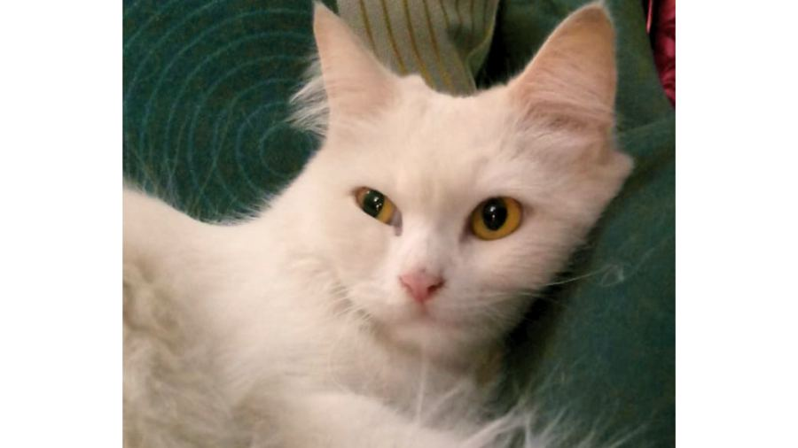
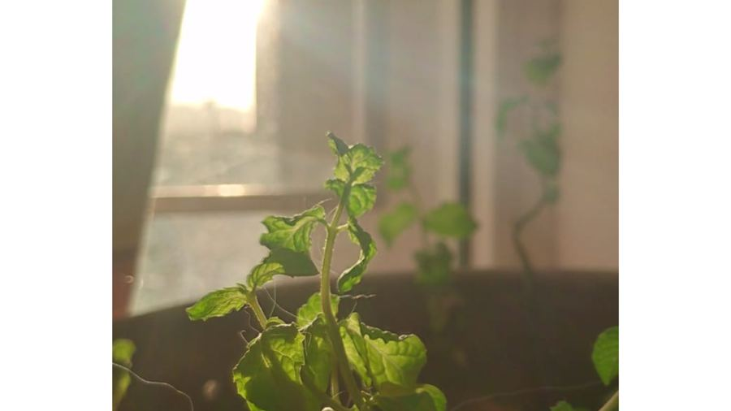
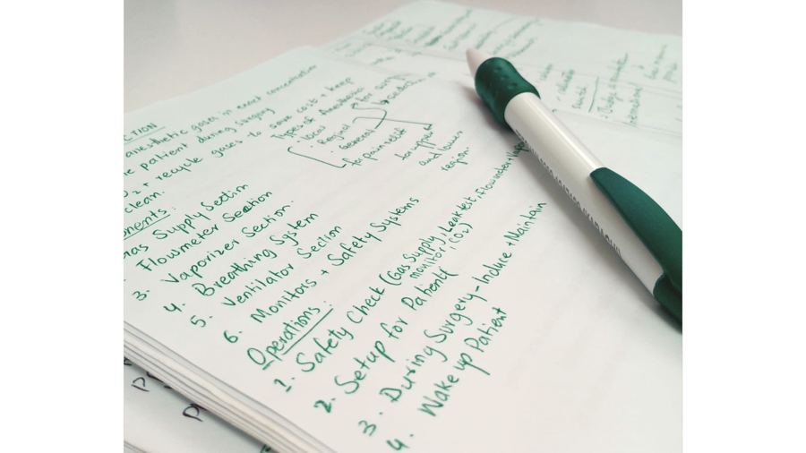
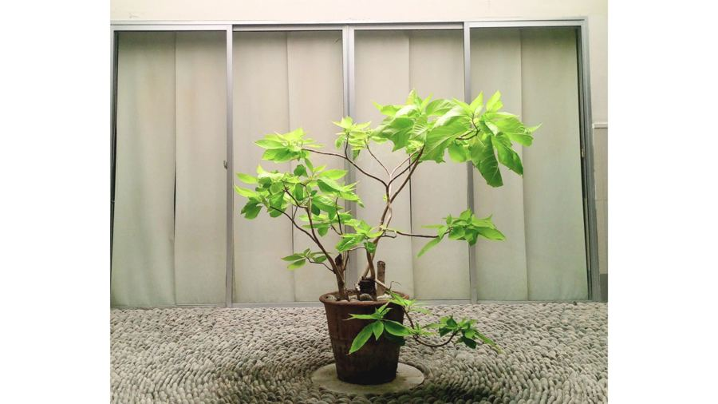
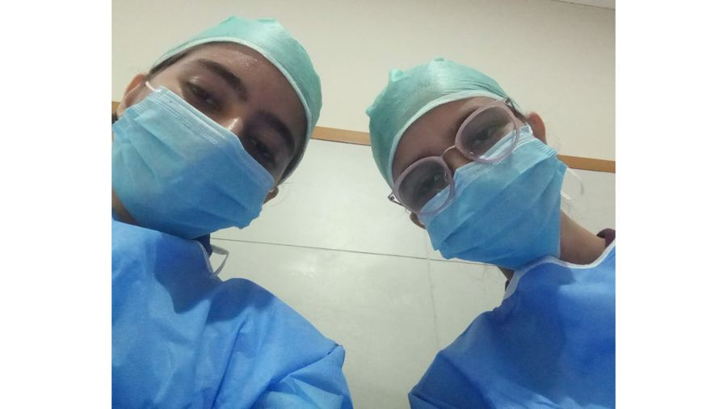

Leisure
The quiet things that keep me going.

Feline Friends
Have always been an animal lover. And am very grateful to say that I have had these furry companions since I was a little child :) My girls, Aina and Minnie play a very big role in keeping me sane when I have the most insane schedules. Thanks to them!

Gardening
I enjoyed nature, but gardening was never my thing. I was introduced to it during the COVID-19 pandemic. My mum used to ask me to help with mending the big vegetable garden we used to have! It is a hobby that grounds you~

Journaling
I don't have the best handwriting...and I don't make aesthetic, Pinterest-worthy notes. But I still love to journal my thoughts and cool down the brain that's always working overtime!

Photography
Never learned photography. Dad used to have a DSLR at home, and the 8-year-old me was VERY fascinated by it. Since then, I've always tried my best to capture the most beautiful moments in my life :)

Volunteering
"Giving back to the community" will always be my bigger goal in life, from volunteering at Dar-ul-Sukoon to organizing community events in my residence society...small to big steps. Everything <3